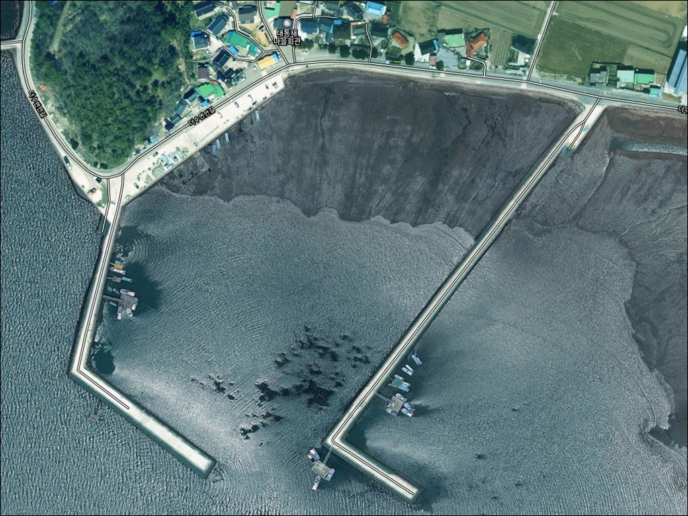
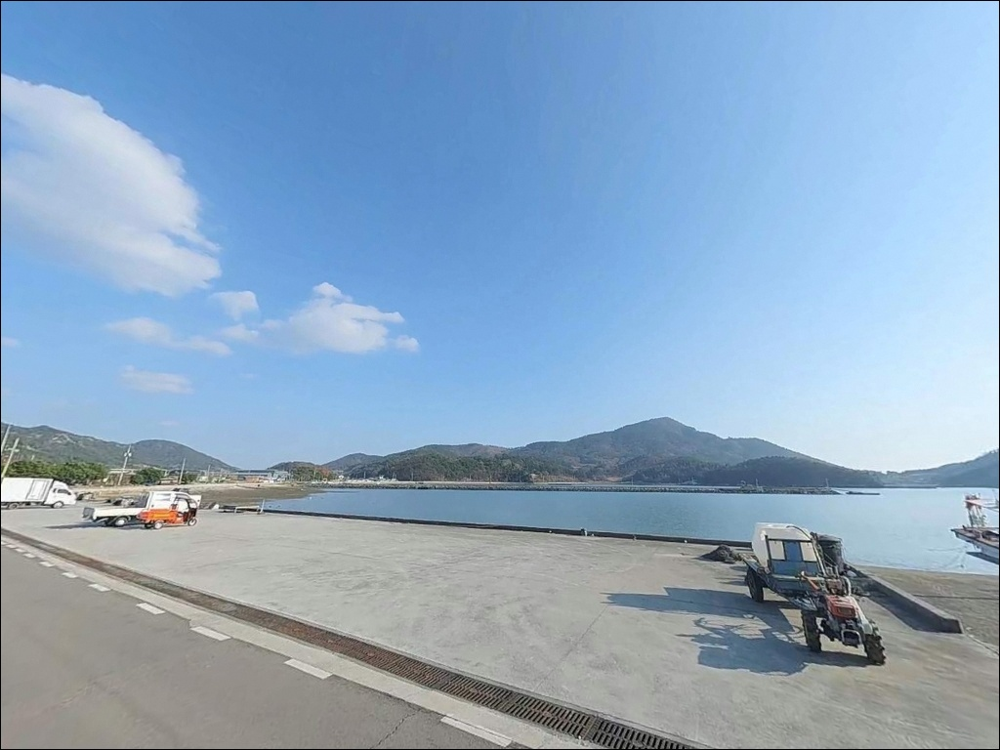
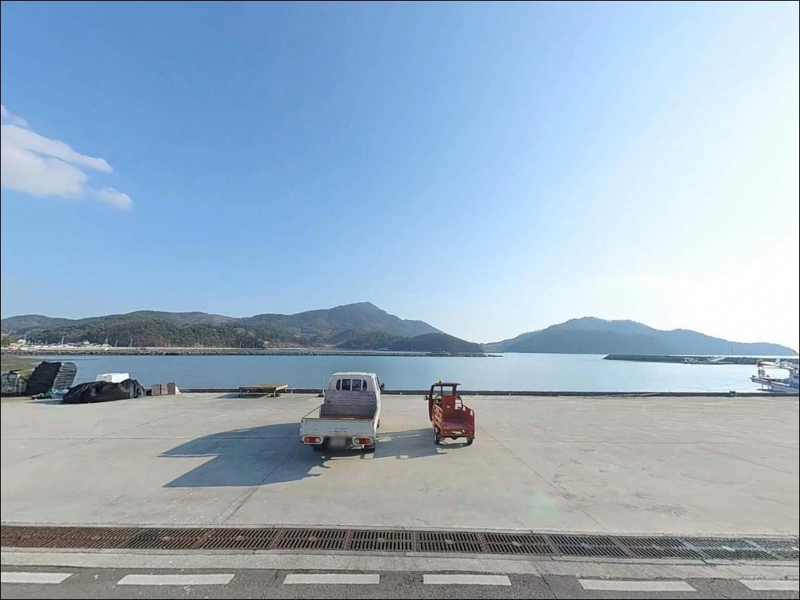
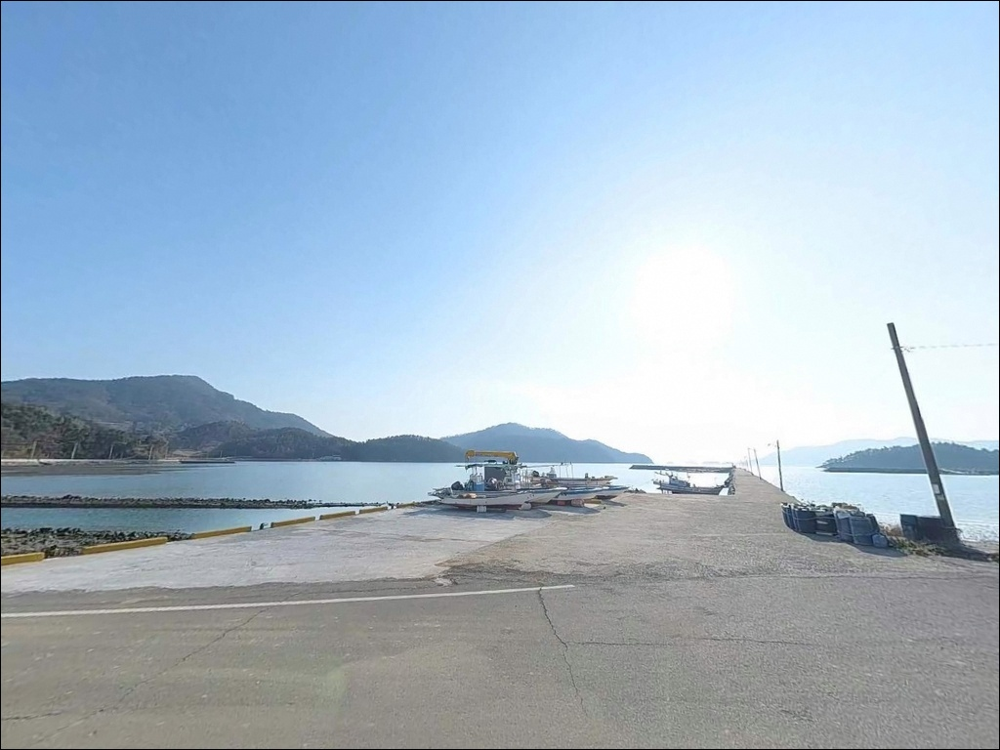
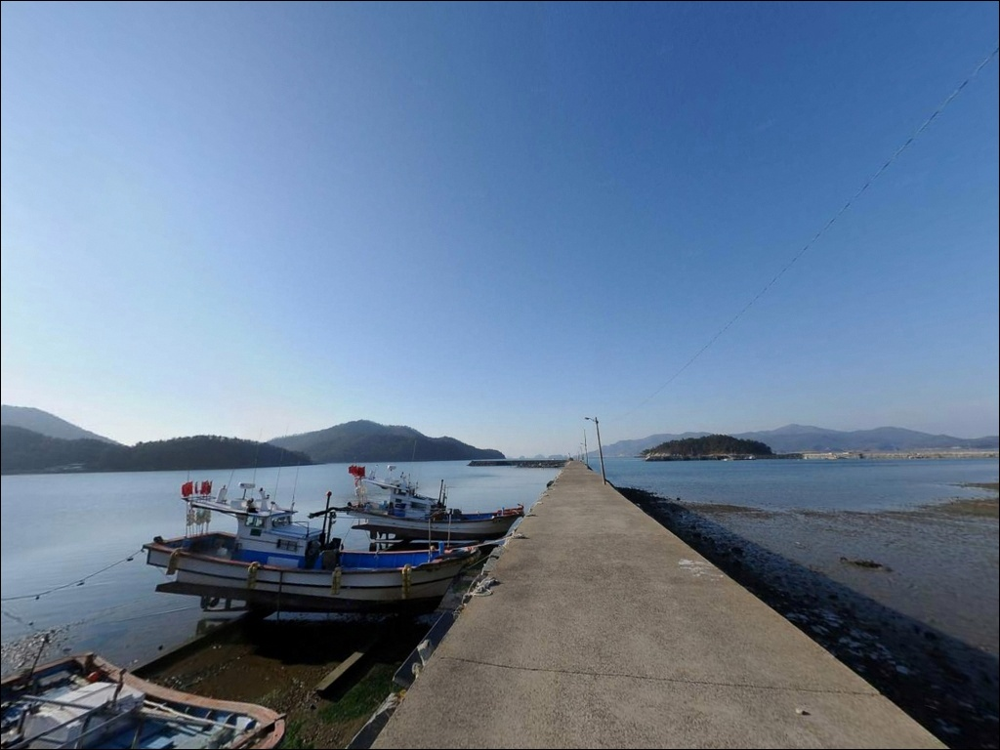
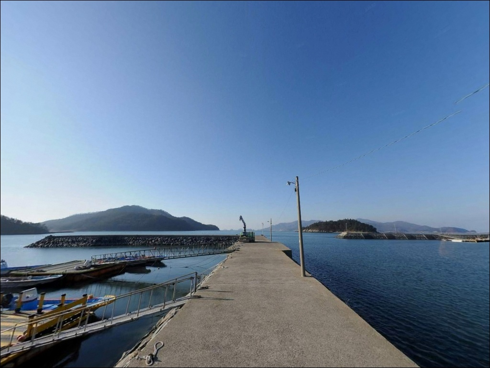
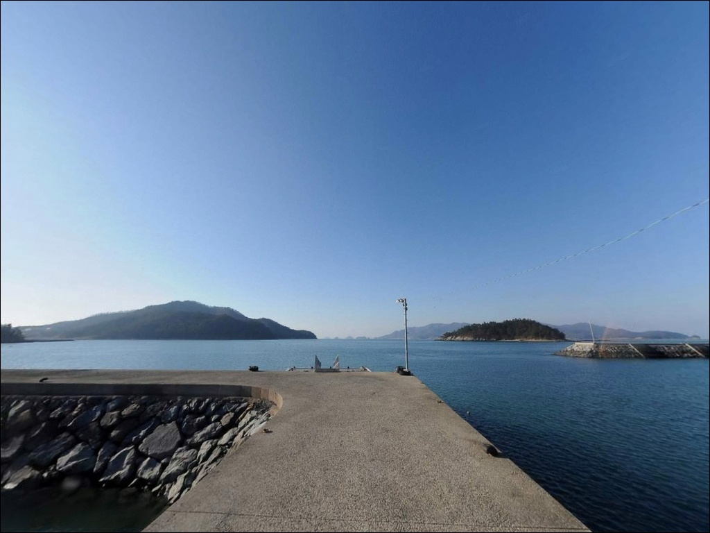
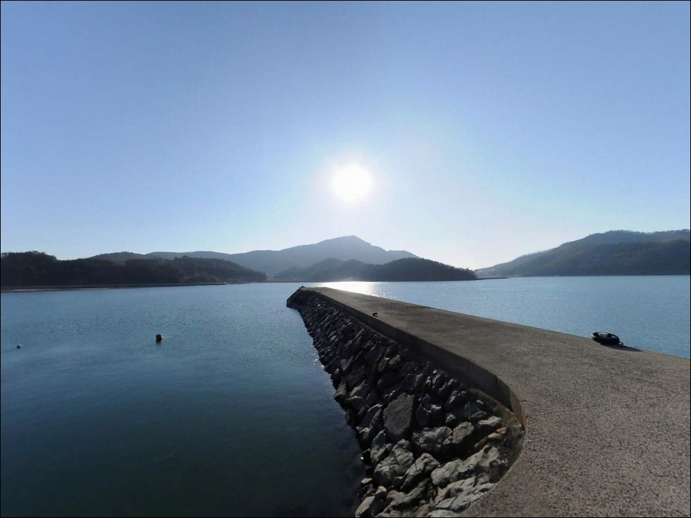
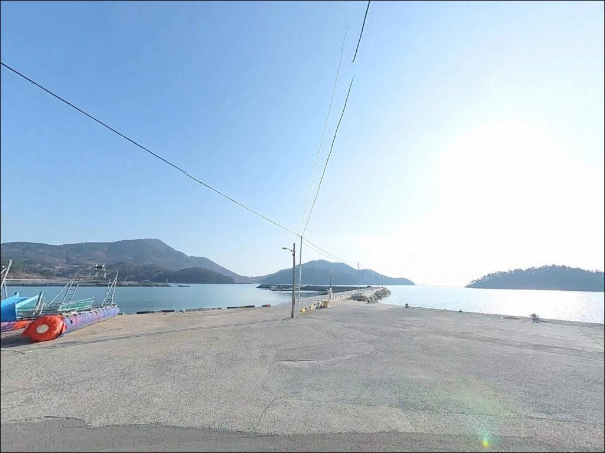

간조엔 수심 얕아지는 고흥 대통항, 만조 전후 2시간에 집약된 원투낚시 입질
이 페이지에는 광고(제휴 링크 포함)가 있으며, 광고 링크를 통해 구매하면 운영자가 판매 수익 또는 수수료를 받을 수 있습니다. 포인트 사진: 카카오맵 스카이뷰·로드뷰. 이 페이지의 지도·사진 이미지는 카카오맵의 실제 서비스 이미지와 다를 수 있습니다.


포인트 안내
대통항
전남 고흥군 도화면 가화리 1502-23
거금수도 조류 영향권 연안에서
물때를 확인하지 않고 간조 시간대에 진입하면
수심이 크게 얕아져 어떤 채비를 써도
제대로 운용하기 어렵습니다.
대통항은 만조 전후 타이밍을 잡는 것이
출조 계획의 첫 번째 판단 기준인 포인트입니다.
이 글은 대통항의 진입 환경, 차박 여건,
지형 기반 낚시 조건, 낚시 스타일별 운용법에
집중합니다.
조황 단정이나 특정 어종 보장은
이 글의 범위에 포함되지 않습니다.

1. 진입 동선과 포인트 접근성
대통항까지는 도화면 중심지(당오리)에서
해안도로를 따라 서쪽으로 진행하는 경로가
기본 동선입니다.
도로 전 구간이 포장되어 있어
비포장 구간이나 급경사 구간은 없지만,
1차선 내외의 협소 구간이 일부 포함되어 있어
초행 운전자는 속도를 줄이고 진행하는 편이 좋습니다.
회차 공간은 항 내 선착장 및 물양장 인근 구역에서
확보됩니다.
선착장 배후 포장 공간이 넓어
중형 SUV 수준의 차량은
큰 어려움 없이 방향을 돌릴 수 있습니다.
단, 대형 캠핑카의 경우
회차 공간 폭을 미리 위성지도로 확인하는 것이
안전한 접근 방식입니다.
주차 후보지는 세 곳입니다.
방파제 기점 인근 평탄 공간,
선착장 배후 포장 공터,
물양장 인접 도로변 확장 구간입니다.
어선 작업이 이루어지는 새벽~오전 시간대에는
어선 입출항 동선을 막지 않는 자리가 우선입니다.

2. 차박 환경과 야간 체류 여건
대통항은 가화리 어촌 마을과 맞닿아 있는 구조로,
완전한 단독 야외 환경이 아닌
마을과 항구가 이어진 형태입니다.
민가가 분산 배치되어 있어
차박 프라이버시는 중간 수준으로,
소란스러운 야간 환경을 원하지 않는 경우라면
부담 없이 머무를 수 있는 분위기입니다.
방파제 초입과 선착장 주변에는
기본적인 가로등이 설치되어 있어
야간에도 일정 수준의 조도가 유지됩니다.
다만 방파제 중·끝단 방향은 어두운 구간이 있어
야간 낚시 시 개인 헤드랜턴은 필수입니다.
어선 출입이 이루어지는 새벽 시간대에는
소음이 발생할 수 있다는 점도 감안해야 합니다.
거금수도 방향의 바람이 외항 쪽으로 직접
노출되는 구조입니다.
동풍이나 남풍 계열의 바람이 강할 경우
방파제 외측 체류가 불편해질 수 있으므로,
출조 전 기상청 풍향 예보 확인이 먼저입니다.


3. 주변 편의시설 및 인프라 현황
대통항 인근 1~3km 이내에서
편의점이나 마트를 기대하기는 어렵습니다.
가화리 일대는 소규모 어촌 마을 구조로,
완전 자급 체제로 진입하는 것이
현실적인 준비 방식입니다.
도화면 중심지(당오리)까지는 차량으로
10분 내외 거리에 해당합니다.
이 구역에 CU 편의점, 세븐일레브 편의점,
SK 주유소, 수협 주유소가 밀집해 있어
식수·얼음·낚시 소품·연료 보급은
출발 전 당오리 지구에서 해결하는 것이
효율적입니다.
도화면사무소 인근에는 농협하나로마트와
중식당 등 식사 가능한 시설도 확인됩니다.
응급 상황을 대비해 도화보건지소와
도화의원도 면 소재지 권역에 위치합니다.
긴 체류를 계획한다면
출발 전 보급을 완료하고 이동하는 동선이
기본입니다.

4. 진입 전 반드시 챙겨야 할 준비사항
대통항 방문 전에 가장 먼저 확인할 것은
물때입니다.
거금수도 해역은 조류가 빠른 구간으로 알려져 있으며,
대통항이 위치한 가화리 연안도
만조·간조 시 수심 차이가 납니다.
바다타임에서 도화면 권역 기준 물때를 확인하고
만조 전후 타이밍을 기준으로 출발 시각을
맞추는 것이 기본 전략입니다.
거금수도 해역은 바람과 기상 변화가 빠른 편입니다.
당일 기상청 해상 예보를 아침에
한 번 더 확인하는 것이 좋습니다.
방파제 외항 끝단은 구조물 높이가 있고
파고가 높아질 경우 위험해지는 구간이므로,
강풍·풍랑 예보 시 외측 출조는 중단합니다.
어항 특성상 어선 출입과 그물 정리 구역이
함께 운용됩니다.
선착장 비트 주변에는 주차하지 않으며,
쓰레기는 도화면 소재지의
종량제 봉투 수거함을 이용합니다.
구명조끼는 방파제 외항 낚시 시
반드시 착용하는 것이 기본 매너입니다.

5. 지형 기반 낚시 여건 분석
대통항은 1975년 지방어항으로 지정된 소형 어항으로,
가화리 해안 암반 돌출부를 기준으로 설정된
소형 내만 구조입니다.
방파제 267m가 외해 파도를 차단하고
내항 쪽은 완만하고 잔잔한 수면이 형성되며,
외항 방파제 끝단 방향으로는
수심 급변 구간이 형성됩니다.
방파제 끝단과 암 돌출부 인접 구간은
이 포인트에서 핵심 탐색 지점입니다.
조류가 항 입구 방향을 따라 형성되는 구조로,
방파제 콧부리에서 바깥쪽으로
채비를 흘리는 방식이 이 지형 조건에 잘 맞습니다.
외항 직벽 구간은 수심이 빠르게 깊어지는 편이어서
찌낚시와 루어 탐색 모두 유효합니다.
내항 선착장 주변은 바닥이 모래와 뻘이 섞인 구조입니다.
밑걸림이 적고 수심이 어느 정도 확보되어 있어
원투낚시 운용이 안정적인 구간입니다.
거금수도 해역 전반을 기준으로
감성돔·볼락·노래미·농어·숭어를
기대해 볼 수 있으며,
봄~가을 시즌에는 갑오징어와 주꾸미도
이 일대의 주요 대상어입니다.
가기 전에 대통항 또는 도화면 방파제 낚시 조황을
꼭 먼저 검색해 보시기 바랍니다.


6. 포인트에 적합한 낚시 스타일 제안
이 포인트에서 가장 범용성이 높은 낚시는
원투낚시입니다.
내항 방향과 방파제 초입 석축에서
안정적으로 운용할 수 있으며,
바닥이 모래·뻘 혼합이어서
밑걸림 걱정 없이 채비를 운용할 수 있습니다.
만조 전후 2~3시간이 핵심 타이밍입니다.
찌낚시는 외항 방파제 끝단에서
유효한 방식입니다.
항 입구 방향으로 조류를 흘리는 운용법이
이 지형 구조에 잘 맞으며,
감성돔 시즌을 노린다면
외항 전면 10~15m 구간을 집중적으로 공략하는
것이 지형 기반 판단입니다.
조류가 빠를 때는 채비 무게를 올려
흘림 속도를 조절해야 합니다.
루어낚시와 에깅도 이 포인트에 어울립니다.
야간에 방파제 가로등 불빛 아래에서
볼락과 우럭을 노리는 루어 운용이 가능하며,
가을철에는 에깅으로
갑오징어와 주꾸미를 기대해 볼 수 있습니다.
방파제 주변 구조물 틈새와
외항 끝단 근처 탐색형 운용이
이 포인트 구조에 적합합니다.

7. 대안 포인트와 플랜 B 동선
대통항에서 여건이 맞지 않는다면
가장 먼저 이동할 곳은
발포항 방파제입니다.
대통항에서 차로 15분 이내 거리이며,
대통항보다 규모가 크고
외항에 테트라포드가 설치된 구조입니다.
찌낚시와 루어 낚시 자리가 다양하게 확보되어 있어
전문 낚시인들도 많이 찾는 곳입니다.
도화면 해안선을 따라 이동하면
죽도항·하동항·구암방파제 등
유사한 지형 조건의 포인트가
연이어 분포합니다.
대통항과 같은 해역 패턴을 공유하므로
채비 구성을 크게 바꾸지 않고
연속 탐방하는 동선으로 활용할 수 있습니다.
차박 여건이 마음에 들지 않는다면
거금대교 경유 약 20~25km 거리에 있는
거금도 신양선착장을 대안으로 검토할 수 있습니다.
차량을 방파제 안까지 진입시킬 수 있어
차박을 겸한 낚시 포인트로
알려진 곳입니다.

물때 한 번 맞추면
대통항의 지형이 보이기 시작합니다
원투낚시나 찌낚시로 방파제 연안을
차분히 탐색하는 스타일이라면
대통항의 내외항 구조는
잘 맞는 지형입니다.
외항 끝단의 수심 급변 구간,
내항 석축의 안정적인 원투 자리,
가을철 에깅까지 복합 운용이 가능한
소형 어항 포인트입니다.
반면 편의시설을 가까이서 이용해야 하거나
차박 시 완전한 독립 공간을 원하는 경우라면
발포솔밭해수욕장 방향이나
거금도 권역을 먼저 고려하는 편이 낫습니다.
물때 확인, 풍향 파악, 자급 준비,
이 세 가지를 갖추고 찾아간다면
조용하고 실속 있는 출조가 될 수 있는 곳입니다.
도화면 해안 도로변 작은 어항에서
하룻밤 낚시를 마치고 새벽 물때를 기다리는
차박 여행자라면,
대통항은 소박하지만 실용적인
거점이 될 수 있는 포인트입니다.